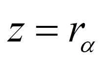
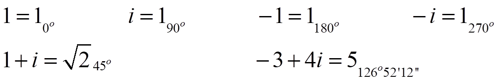
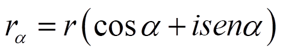

Números complejos
Forma polar
Una forma alternativa de caracterizar el afijo de un número complejo es por su módulo, |z|= r, y argumento, α = Arg z:

Esta forma se llama forma polar.
Ejemplos:

Para pasar de polar a binómica usamos la fórmula:

Ejercicio. Pasa de forma binómica a polar o de polar a binómica, según el caso:
a) 8+6i
b) -7i
c) 345o
d) 2300o
Soluciones: a) 536o52'12''; b) 7270o; c) 2,12+2,12i; d) 1-1,73i
Obra publicada con Licencia Creative Commons Reconocimiento No comercial Compartir igual 3.0